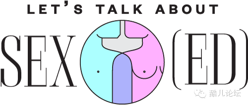
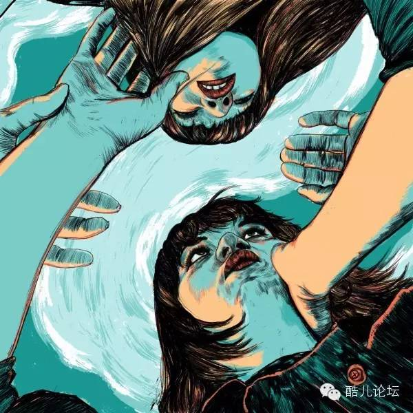

传译 | 一封写给年轻时的我的信
译/文文
英文原文请点击最下方阅读原文
亲爱的双性恋伙伴：你没有问题
一封写给年轻时的我的信
Anna Pulley
性教育需要更新。如果你可以给青少年时期的自己写一封信，在信中说明你希望那时的自己知道什么关于性的事情，你会说什么？

▼
这对你来说可能是件令人震惊的事，但是你喜欢女孩子。非常喜欢。你以“那种”方式喜欢着她们，事实上你喜欢她们的每一点。太突然了？好吧，我们重新开始。
也许你还记得凯莉。那个七岁的黑发女孩，你因为她擅长侧手翻并且认为你是个男孩而很喜欢她。她坚信你是个男孩，···导致她在基督教青年会的女厕所里看到你之后就公开嘲笑你。这也是你第一次感觉到羞耻，但是你在那之后很多年都不懂这是为什么。
还记得杰西卡 • 帕金斯吗?她是个草莓般的金发女郎，思维敏捷，但是嘴巴不太干净。你每个星期都要给她写好几封十六张纸的信，但这还不够好，这对她来说还不够亲密。
即使你在亚利桑那州长大，那里枪械有很大的自由，信仰主要被用作一种武器（不只是针对同性恋，还有移民、妇女和有色人种）你也曾无意间看过一些女同性恋的东西。你的妈妈教你关于两个精神的东西。她也和你说一些在大学里和她们的男朋友们玩3P最后分手的女同性恋们。你最好的朋友的妈妈和一个女人住过一段时间，虽然没有人讨论她们的关系，甚至是在她的恋人变得一直虐待她之后。你对你最喜欢的老师和她一直说的那个“室友”抱有怀疑，但是因为你的学校是这么的传统，她一直到你毕业才和你出柜。然后是你的看到过的在第四大道的那家有个粉色三角标志的酒吧，你一直很想知道为什么它的窗户都被涂黑了，为什么这些人一定要被藏起来，从视线中消失。
和你说说真相吧。你的心将永远不会静止。尽管这对你是好的。不是对于你的快乐和幸福，而是对你的写作。这是一件好事。你从来没有过跳槽的想法，因为不然的话，你就完蛋了。
说到这里，我们来聊聊未来吧。你可以暂时关掉Dawson’s Creek 吗？这很重要。对，the Jewel 也关掉，这样更好。好的，那我们开始吧。所有你知道关于性和欲望的都是错的。性不是由男孩来主导和女孩来忍受。也不是像WB青少年肥皂剧经常描绘的那样朦朦胧胧、浪漫的景象。
我知道这可能吓到你，因为你在学校里上过一学期的性教育课，学到了三个要点和如何防止让“香蕉”感染性传染病。你那可怜的、疲惫的老师已经尽她所能地教你们有限的、少的不能再少的课了，但是她只是浅尝辄止。她教你用好听的拉丁语说你的私处——阴阜、阴部——而不是为什么你们会对她们感到这么羞耻。（多年后你会知道阴部在拉丁语里是“可耻的部分”的意思，你也会因为不管到哪里都成为生殖器的代名词而生气）你的老师一点都不会提及同性恋关系或同性性行为。也不会有人——不管是朋友老师或是杂志——说到任何关于机构、边界甚至是你自己的快乐。这些都是你要自己学会的东西。
你认为你通过看Cinemax上的深夜、软核色情片学到了完整一套的“性爱动作”。但是你在性这方面知道的事情还什么都不是呢，你只知道真心话大冒险、斯米尔诺夫冰和色情杂志上不停斥责的“关于你的一切都是错的！”的东西。你被教导要害怕性，即使你从来没有尝试过拥有它，并且在未来三年将先开始嗑药。你磕嗨了的时候也没发生过一次性关系，反而变得沮丧，长胖30磅。你变得凄凉又孤独。你变得这么惨，一个上课的时候坐在你边上的你不认识的女生帮你安排了一次约会，而你不知道对方是谁。“Donnie超适合你的。”她会这么说。这一切都源于你们一起去听了一场Dave Matthews的音乐会。
你会遇到Donnie，并且对他一点感觉都没有。你会想知道自己又有什么问题。之后你会看到一则肛门清洗的广告然后想起来，哦对了，一切一切的问题都在自己身上。
所以之后的一段时间，你离开了小镇。并且一旦你这么做了，你会遇到一个漂亮的女孩，她有着用不完的精力和比她目光更深邃的眼睛。
你会在半夜六点开几个小时的车去汽车旅店，然后在旅店僵硬的床单上，那个女孩会在黑暗中吻你，抱紧你的身体。你之后不再有知觉，很快的陷入一个不再需要为自己的人生辩解的地步。
第二天早上，在你们分开之后，她会在开车的时候睡着，把她的车开进沟里，之后一个月不和你说话。当她终于和你说话的时候，那时候她会问你是否愿意和她和她的新男友一起去远足。

你人生的大多时间都在克服身份、性别、种族带来的各种问题。朋友和陌生人在你站在你头发乌黑的美国原住民母亲身边之前都认为你是白种人。之后她们会和你说你们长得很像。人们只能看到他们想看的。在询问你人种的表格中，你会在其他一栏打勾，同时惊叹于文字完美的模糊性。你被文字深深地吸引，因为这是你感知世界的唯一方式。你花了很久才明白很多事情是不能被记录下来的。但你还是在不停的尝试。
你会一次又一次的心碎，每一次你都爱得义无反顾。
你从柜子里走出来，却发现还有更多的柜子等着你。你会试着使用像双性恋、男同性恋、女同性恋和“标签只为罐头而生”这样的词语。你会明白其他人总是会用你在操的那个人来定义你，还会知道不要太相信定义。
但这些东西你需要很多年才能知道。
在那之前，你会一直保守秘密，大多数是自己的。你会亲吻女孩子，但是生理上觉得很恶心。你会厌恶自己和自己的欲望。你会和一个女孩交往几个月而不和任何人说。你会给你在追的女孩子写电子邮件，里面带有项目符号列表详细地说明你为什么不能这样。其中有一个原因是这样的：女同性恋的性行为太肤浅了！你甚至愚蠢的认为你可以带你的女朋友和另一个人去度假，那个人还不会发现你们的小秘密。
在那个漆黑的旅店里，你会因为羞耻、孤独和困扰了你多年的自我厌恶而撕扯你地下女友的衣服。她会以一个几乎听不到的哼声说“吻我”然后你就好奇抚摸她是不是一个正在发生的反抗，一个令人狂喜的动作，是这么的随意而又坚定，甚至让你误以为他本来就应该是这样。只有你们的身体在夜晚拥抱彼此，只有记忆无趣的边际，关于青春期，关于放下怀疑。第二天早上，你一起去度假的那个朋友会非常生气。他不相信你可以蠢到认为他不会发现就在三尺外的床上你和另一个女人发生性关系。你就不信任他和毫无远见向他道歉。
“我很害怕“，你和他说，眼泪顺着眼角的皱纹流下来，“我不想这样，但是我控制不了。”
“嘿”，他会这样，向你伸出手，轻轻的说，“这没问题，你很好。”
他会在你开始哭的时候握着你的手，你会告诉自己他说的是对的。
你确实是，
也将一直是，
很好的。
你没有任何问题。
祝好。
安娜。